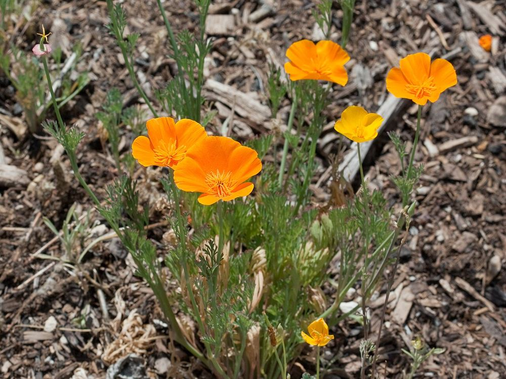

All 10 herbs / 3 of 10
How to grow California poppy from seed
Never transplant it — sow it where it will grow, and it will come back on its own.
EasyAnnualEschscholzia californica · golden poppy · Poppy family (Papaveraceae)

At a glance
- Life cycle
- Annual; short-lived perennial in mild climates (zones 8–10)
- Difficulty
- Easy
- Sun
- Full sun
- Soil
- Poor, sandy, well-drained — rich soil means fewer flowers
- Sowing depth
- Barely cover, about 1/16 in (1–2 mm)
- Germination
- 10–20 days in cool soil, around 55–65°F (13–18°C)
- When to sow
- Direct sow only — it has a taproot and hates being moved. Sow in autumn where winters are mild, or in early spring
- Spacing
- 6–8 in (15–20 cm)
- Height
- 8–18 in (20–45 cm)
- Flowers
- About 2–3 months after sowing
Step by step
- Choose the sunniest, driest spot you have. Scatter seed thinly on bare soil and barely cover it.
- Sow in early spring as soon as the soil can be worked, or in autumn where winters are mild. Cool soil helps it germinate.
- Thin to 6–8 inches. Do not fertilise — hungry soil gives the most flowers.
- The flowers close at night and on cloudy days, so do not panic if the bed looks empty on a grey morning.
Watering
Water seedlings until they are established, then only in long droughts. Too much water causes root rot and fewer flowers.
Growing in pots
Fine in pots at least 8 in (20 cm) deep — but sow directly into the pot, never transplant.
Feeding
None. Fertiliser means leaves, not flowers.
Problems and fixes
- Seedlings collapse — soil too wet; let it dry out between waterings.
- Aphids on buds — spray off with water.
- Slugs on young plants.
Harvest and drying
Cut the whole flowering tops on a dry day and hang them in small bundles to dry in a shady, airy place.
Storing
Dried flowering tops in a sealed jar away from light; use within a year.
Saving seed
The long, thin pods split open with a snap when ripe. Collect them just as they turn tan, before they burst.
A bit of history
The official state flower of California since 1903. Native Californian peoples used the plant in traditional practice. Despite the name, it is not the opium poppy — it is a different genus.
Traditional uses on this site are history, not medical advice. Before using any herb, talk to a doctor or pharmacist — especially if you are pregnant, nursing, taking medication, or allergic to plants in the daisy family (Asteraceae), which includes seven of the ten herbs here.
Only want California poppy? A single organic packet from Strictly Medicinal Seeds is $6.44 (100 seeds).